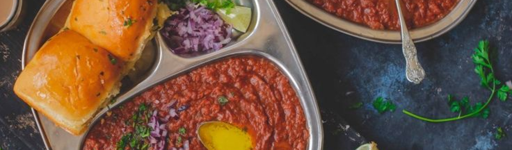
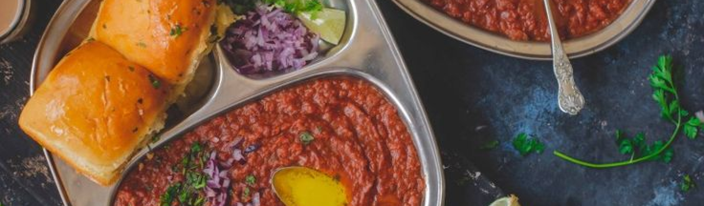

Ingredients needed
Pav/pav buns – as required (as shown in the picture)
Butter to toast pav – as needed
Onion – 2
Tomato – 3 (large and ripe)
Potato – 3
Carrot and beans together -1 cup heaped (chopped)
Peas – 1/3 cup
Capsicum – 1 medium size Salt as required
Ginger – 1 inch piece
Garlic – 4-5 cloves
Green Chilli – 2
Chilli powder – 1 tsp
Pav Bhaji Masala – 2 tsp (available in all stores)
Turmeric powder – 1/4 tsp
Butter – 2 tbsp
Oil – 1 tbsp
Cumin seeds – 1/2 tsp (optional)
Coriander leaves – 2 tbsp finely chopped
Onion – 2-3 tbsp
finely chopped Lemon wedges – 2-3
Butter -2 tsp
Preparation
Pressure cook potatoes, peel the skin, mash it slightly and keep it aside.
Chop all the vegetables into small pieces.
Grind ginger, garlic and green chilli to a paste.Steam cook beans, carrot and peas with a little salt or you can pressure cook keeping it in a vessel (do not add water to the carrot + beans + peas) inside the cooker for 1 whistle alone (See picture below).
Method
Heat oil + butter in a pan, add finely chopped onions and saute stirring continuously till golden brown. Add a little salt to speed up the process. (you can season 1/2 tsp of cumin seeds if you prefer).
Add carrot, beans, peas and capsicum.
Add chilli powder, turmeric powder and pav bhaji masala and mix well.
How to serve Pav Bhaji
Slice pav horizontally. Apply butter on both sides and toast pav until brown on both sides. Serve with hot bhaji topped with finely chopped raw onions and few drops of lemon juice.
You can also sandwich pav with bhaji and serve as seen in the picture below.